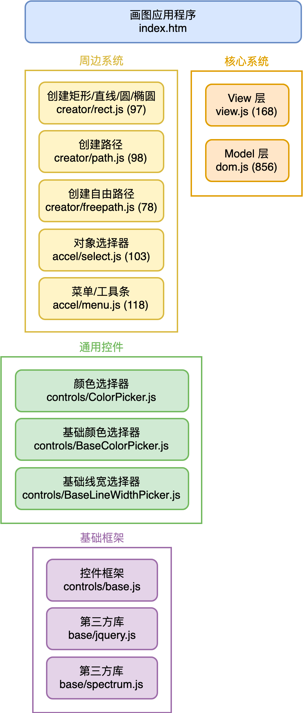
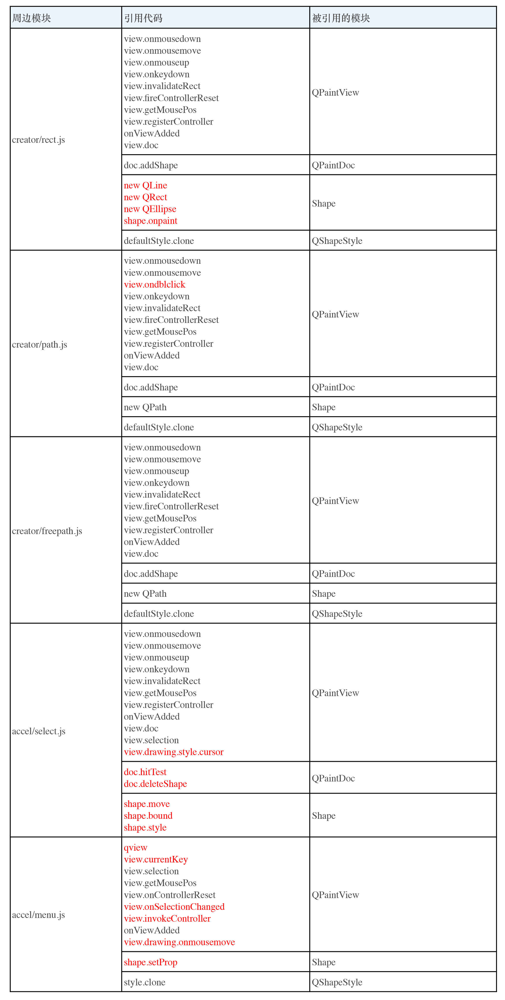
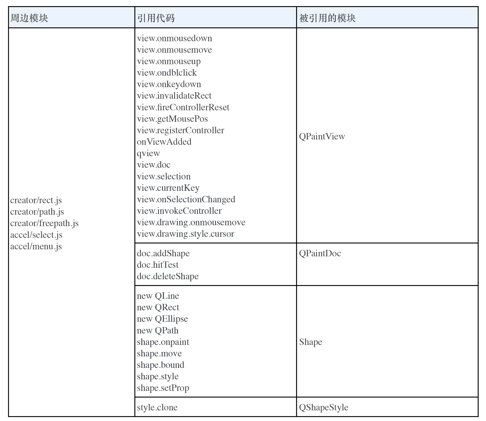
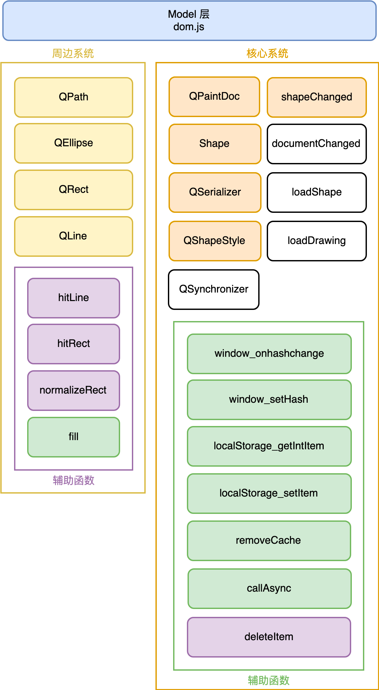
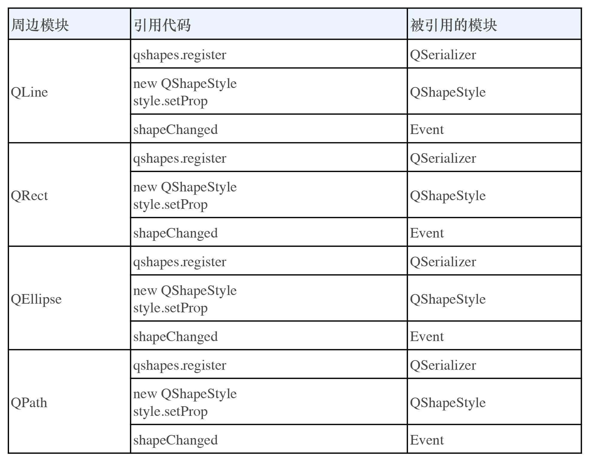
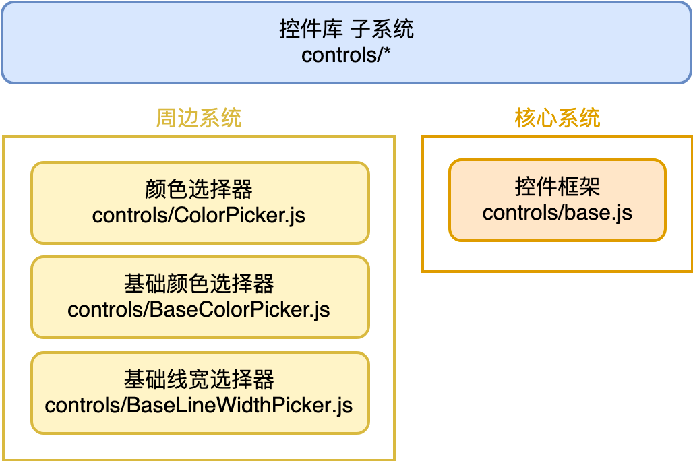
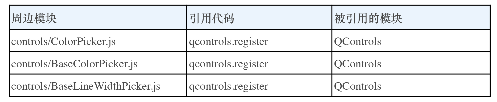

- 00 开篇词 怎样成长为优秀的软件架构师？.md
- 01 架构设计的宏观视角.md
- 02 大厦基石：无生有，有生万物.md
- 03 汇编：编程语言的诞生.md
- 04 编程语言的进化.md
- 05 思考题解读：如何实现可自我迭代的计算机？.md
- 06 操作系统进场.md
- 07 软件运行机制及内存管理.md
- 08 操作系统内核与编程接口.md
- 09 外存管理与文件系统.md
- 10 输入和输出设备：交互的演进.md
- 11 多任务：进程、线程与协程.md
- 12 进程内协同：同步、互斥与通讯.md
- 13 进程间的同步互斥、资源共享与通讯.md
- 14 IP 网络：连接世界的桥梁.md
- 15 可编程的互联网世界.md
- 16 安全管理：数字世界的守护.md
- 17 架构：需求分析 (上).md
- 18 架构：需求分析 (下) · 实战案例.md
- 19 基础平台篇：回顾与总结.md
- 20 桌面开发的宏观视角.md
- 21 图形界面程序的框架.md
- 22 桌面程序的架构建议.md
- 23 Web开发：浏览器、小程序与PWA.md
- 24 跨平台与 Web 开发的建议.md
- 25 桌面开发的未来.md
- 26 实战（一）：怎么设计一个“画图”程序？.md
- 27 实战（二）：怎么设计一个“画图”程序？.md
- 28 实战（三）：怎么设计一个“画图”程序？.md
- 29 实战（四）：怎么设计一个“画图”程序？.md
- 30 实战（五）：怎么设计一个“画图”程序？.md
- 31 辅助界面元素的架构设计.md
- 32 架构：系统的概要设计.md
- 33 桌面开发篇：回顾与总结.md
- 34 服务端开发的宏观视角.md
- 35 流量调度与负载均衡.md
- 36 业务状态与存储中间件.md
- 37 键值存储与数据库.md
- 38 文件系统与对象存储.md
- 39 存储与缓存.md
- 40 服务端的业务架构建议.md
- 41 实战（一）：“画图”程序后端实战.md
- 42 实战（二）：“画图”程序后端实战.md
- 43 实战（三）：“画图”程序后端实战.md
- 44 实战（四）：“画图”程序后端实战.md
- 45 架构：怎么做详细设计？.md
- 46 服务端开发篇：回顾与总结.md
- 47 服务治理的宏观视角.md
- 48 事务与工程：什么是工程师思维？.md
- 49 发布、升级与版本管理.md
- 50 日志、监控与报警.md
- 51 故障域与故障预案.md
- 52 故障排查与根因分析.md
- 53 过载保护与容量规划.md
- 54 业务的可支持性与持续运营.md
- 55 云计算、容器革命与服务端的未来.md
- 56 服务治理篇：回顾与总结.md
- 57 心性：架构师的修炼之道.md
- 58 如何判断架构设计的优劣？.md
- 59 少谈点框架，多谈点业务.md
- 60 架构分解：边界，不断重新审视边界.md
- 61 全局性功能的架构设计.md
- 62 重新认识开闭原则 (OCP).md
- 63 接口设计的准则.md
- 64 不断完善的架构范式.md
- 65 架构范式：文本处理.md
- 66 架构老化与重构.md
- 67 架构思维篇：回顾与总结.md
- 68 软件工程的宏观视角.md
- 69 团队的共识管理.md
- 70 怎么写设计文档？.md
- 71 如何阅读别人的代码？.md
- 72 发布单元与版本管理.md
- 73 软件质量管理：单元测试、持续构建与发布.md
- 74 开源、云服务与外包管理.md
- 75 软件版本迭代的规划.md
- 76 软件工程的未来.md
- 77 软件工程篇：回顾与总结.md
- 加餐 如何做HTTP服务的测试？.md
- 加餐 实战：“画图程序” 的整体架构.md
- 加餐 怎么保障发布的效率与质量？.md
- 热点观察 我看Facebook发币（上）：区块链、比特币与Libra币.md
- 热点观察 我看Facebook发币（下）：深入浅出理解 Libra 币.md
- 用户故事 站在更高的视角看架构.md
- 答疑解惑 想当架构师，我需要成为“全才”吗？.md
- 结束语 放下技术人的身段，用极限思维提升架构能力.md
- 课外阅读 从《孙子兵法》看底层的自然法则.md
加餐 实战：“画图程序” 的整体架构
你好，我是七牛云许式伟。
我们先回顾一下 “架构思维篇” 前面几讲的内容：
- [57 | 心性：架构师的修炼之道]
- [58 | 如何判断架构设计的优劣？]
- [59 | 少谈点框架，多谈点业务]
- [60 | 架构分解：边界，不断重新审视边界]
我们先谈了怎么才能修炼成为一个好的架构师，其中最核心的一点是修心。这听起来好像一点都不像是在谈一门有关于工程的学科，但这又的的确确是产生优秀架构师最重要的基础。
接下来几篇，我们核心围绕着这样几个话题：
- 什么是好的架构？
- 架构的本质是业务的正交分解，分解后的每个模块业务上仍然是自洽的。
我们反复在强调 “业务” 一词。可以这样说，关注每个模块的业务属性，是架构的最高准则。
不同模块的重要程度不同，由此我们会区分出核心模块和周边模块。对于任何一个业务，它总可以分解出一个核心系统，和多个周边系统。不同周边系统相互正交。即使他们可能会发生关联，也是通过与核心系统打交道来建立彼此的间接联系。
今天我们将通过第二章 “桌面开发篇” 的实战案例 “画图程序” 来验证下我们这些想法。我们以最后一次迭代的版本 v44 为基础：
整体结构
我们先来分析整个 “画图” 程序的整体结构。除了 index.htm 作为总控的入口外，我们把其他的文件分为以下四类：
- 核心系统（棕色）：这些文件隶属于整个画图程序的业务核心，不可或缺；
- 周边系统（黄色）：这些文件属于业务的可选组件；
- 通用控件（绿色）：这些文件与画图程序的业务无关，属于通用的界面元素，由画图程序的周边系统所引用；
- 基础框架（紫色）：这些文件与画图程序的业务无关，属于第三方代码，或者更基础的底层框架。
我们可以有如下文件级别的系统组织结构：

通过这个图我们可以看出，这个画图程序的 “内核” 是非常小的，就三个文件：index.htm、view.js、dom.js。为了让你看到每个文件的复杂度，我把各个文件的代码规模也在图中标了出来。如果我们把所有的周边系统以及它们的依赖代码去除，整个程序仍然是可以工作的，只不过我们得到的是一个只读的画图程序的查看器（QPaintViewer）。
这很有意思，因为我们把所有的 Controllers 都做成了彼此完全正交的可选组件。
有了这个图，我们对各个文件之间的关系就很清楚了。接下来，正如我们在 “ [58 | 如何判断架构设计的优劣？]” 中说的那样，我们最关心的还是周边系统，也就是这些 Controller 对核心系统的伤害是什么样的。
我们先把所有引用关系列出来：

我们先看 creator/rect.js 模块。它对 View 层，主要是 QPaintView 类的引用是 10 处，对 Model 层，主要是 QPaintDoc、Shape、QShapeStyle 这三者的引用是 6 处。每处引用都是 1 行代码，直接调用 View 层或 Model 层对外提供的接口方法。
单就 creator/rect.js 模块而言，它对核心系统的伤害值为 10 + 6 = 16。但是实际上这些接口方法绝大部分并不是专门提供给 creator/rect.js 模块的，这意味着所有周边模块应该共担这个伤害值。比如某个接口方法被 N 个周边模块引用，那么每个周边模块分担的伤害值为 1/N。
这个逻辑初听起来有点奇怪，我新增一个和我互不相关的周边模块，怎么会导致一个既有周边模块对核心系统的伤害值降低？
这是因为，我们的伤害值是工程测量值。我们往极端来说，如果有无穷多个周边模块都会引用某个接口方法，那么对于其中某个周边模块来说，它为此造成的伤害值为 0，因为这个接口太稳定了。这也证明，抽象出共性的业务方法，比给某个周边模块单独开绿灯要好。我们定义业务的接口要尽可能追求自然。
但是现实中，被无数个周边模块引用的接口是不存在的。你可能主观判断我这个接口是很通用的，但是它需要实证的依据。每增加一个引用方，这个实证就被加强一次。这也是为什么增加一个新周边模块会导致既有周边模块伤害值降低的原因，因为它证实了一些接口方法的确是通用的。
有一些接口当前只有 creator/rect.js 引用的，这些接口的引用代码在表格中我把它们标为红色，它们是：
- new QLine
- new QRect
- new QEllipse
- shape.onpaint
我们一眼看过去就很清楚，这些接口确实是非常通用的接口。之所以它们只有 creator/rect.js 引用，是因为这个 “画图” 程序当前的规模还比较小，随着越来越多的周边模块加入，逐步也会有更多人分担伤害值。
当前系统有 5 个周边模块。考虑多个周边模块共担伤害值的情况，creator/rect.js 模块对核心系统的伤害值是多少？
我们做个近似，只要某个接口已经被超过一个周边模块引用，就认为它的引用次数是 5，而不是一一去统计它。这样算的话，creator/rect.js 模块对核心系统的伤害值约 12⁄5 + 4 = 6.4。
类似地，我们可以计算其他周边模块对核心系统的伤害值，具体如下：
- creator/path.js 模块，伤害值约 12⁄5 + 1 = 3.4。
- creator/freepath.js 模块，伤害值约 13⁄5 = 2.6。
- accel/select.js 模块，伤害值约 10⁄5 + 6 = 8。
- accel/menu.js 模块，伤害值约 5⁄5 + 6 = 7。
如果我们把所有周边模块看作整体，它和核心系统的关系如下：

可以看出，整个周边系统对核心系统的引用是 31 处，也就是说它带来的伤害值为 31。这和上面我们近似计算得到的所有周边系统伤害值之和 6.4 + 3.4 + 2.6 + 8 + 7 = 27.4 不同。这中间的差异主要由于我们没有去实际统计接口方法的引用次数而直接统一用 5，所以估算的伤害值比实际会小一点。
Model 层
看完了整体，我们把关注点放到 Model 层。
对于这个画图程序，代码量最多的就是 Model 层，即 dom.js 文件，大约 850 多行代码。所以我们决定进一步分解它，得到如下结构：

当我们把 Model 层看作一个完整的业务时，它内部仍然可以分解出一个核心系统，和多个周边系统。并且同样地，我们把代码分为四类：
- 核心系统：隶属于整个画图程序的业务核心，不可或缺，我们标记为棕色或白色；
- 周边系统：属于业务的可选组件，主要是各类图形；
- 操作系统相关的辅助函数：与业务无关，但是和平台相关，我们标记为绿色；
- 纯算法的辅助函数：与业务无关，与操作系统也无关，我们标记为紫色。
上图的核心系统中，标记为棕色的模块与白色的模块的区别在于，标棕色的模块会被周边系统所引用，属于核心系统的 “接口级” 模块。标白色的模块只被核心系统内部所引用，不把它们画出来也是可以的。
另外，图中 Shape 接口因为 JavaScript 是弱类型语言，它在代码中并没有显式体现出来。这里我们将它用 Go 语法表达如下：
type number = float64
type any = interface{}
type HitResult struct {
hitCode number
hitShape Shape
}
type Shape interface {
style QShapeStyle
onpaint(ctx CanvasRenderingContext2D)
hitTest(pt Point) HitResult
bound() Rect
setProp(parent any, key string, val any)
move(parent any, dx, dy number)
toJSON() any
}
当然，和分析整个画图程序一样，我们最关心的还是周边系统对核心系统的伤害是什么样的。
我们先把所有引用关系列出来：

对于 Model 层来说，目前我们需求的开放性主要体现在图形（Shape）的种类。未来是否要支持图片，是否要支持艺术字等等，这些存在很大的变数。所以我们当前的周边模块，基本上都是某种图形。
通过这个表格我们可以看出，不同的图形对核心系统的需求完全一模一样。我们很容易计算得到，整个周边系统对核心系统的伤害值为 4，平均每一种图形的伤害值为 1。
通用控件库
聊了文件级别的组织结构，也聊了 Model 层，我们画图程序的整体脉络也就出来了。这里我再补充一个虽然和业务无关，但是也是一个不小的体系设计：通用控件库子系统。
控件的种类是无穷的，我们自然而然得去考虑怎么适应未来的需求。出于开放性架构的考虑，你会发现它也可以基于核心系统和周边系统来拆分，如下：

同样地，我们最关心的还是周边系统对核心系统的伤害是什么样的。
我们先把所有引用关系列出来：

通过这个表格我们可以看出，这些控件的实现本身和核心系统，即控件框架没什么关系，它们只是把自己注册到控件框架中。所有控件对核心系统的需求完全一模一样。我们很容易计算得到，整个周边系统对核心系统的伤害值为 1，平均每一种控件的伤害值为 1/3。
结语
这一讲我们通过前面实战的画图程序作为例子，来剖析架构设计过程业务是如何被分解的。
对于复杂系统，一定要理清核心系统和周边系统的边界，让整个程序的内核最小化。
另外，我们也实际分析了画图程序中，周边模块对核心系统的伤害值。这个数据可以很好地评判不同架构方案的好坏。
如果你自己也实现了一个 “画图程序”，可以根据这几讲的内容，对比一下我们给出的样例代码，和自己写的有哪些架构思想上的不同，这些不同之处的得失是什么？
如果你对今天的内容有什么思考与解读，欢迎给我留言，我们一起讨论。下一讲我们的话题是 “全局性功能的架构设计”。
如果你觉得有所收获，也欢迎把文章分享给你的朋友。感谢你的收听，我们下期再见。
© 2019 - 2023 Liangliang Lee. Powered by gin and hexo-theme-book.